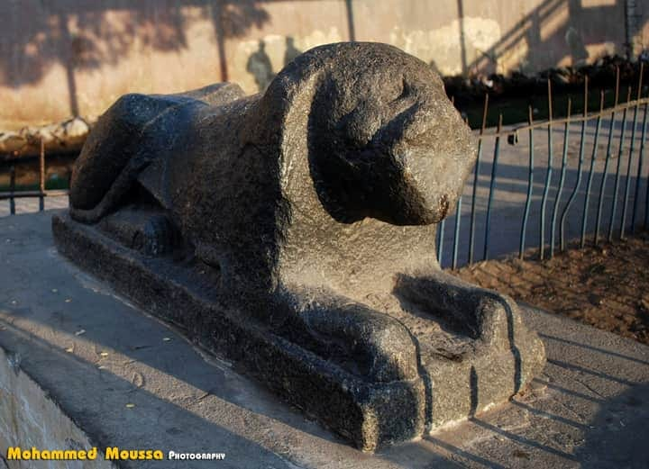

تمثال اسد دمنهور
Damanhur Lion Statue
تمثال أسد دمنهور
تمثال أثري عُثر عليه في مدينة دمنهور، ويُعد نموذجًا هامًا من فنون التمثال في مصر القديمة، ويرتبط بعبادة الآلهة التي تمثل بالأسد.
التاريخ والأصل
يُعتقد أن التمثال يعود إلى فترة انتشار عبادة الآلهة الممثلة بالأسد في مصر القديمة، وقد وُجد أثناء شق خط السكة الحديد أو في المناطق المجاورة له.
مكان العثور والنقل
تم العثور على التمثال في مدينة دمنهور أو مناطقها المحيطة، ونُقل من موقعه الأصلي أثناء تجديدات محطة السكة الحديد للحفاظ على سلامته.
الموقع الحالي
يُحفظ التمثال حاليًا في مخازن هيئة الآثار بمحافظة كفر الشيخ، حيث يتم الاهتمام بصيانته وحمايته من الأضرار.